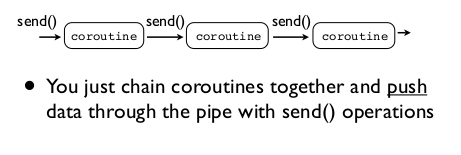
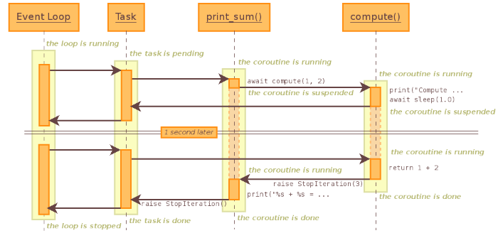

Python3 Coroutine(协程) 与 asyncio
协程，又称微线程，纤程，英文名 Coroutine。协程的作用，是在执行函数 A 时，可以随时中断，去执行函数 B，然后中断继续执行函数 A（可以自由切换）。但这一过程并不是函数调用（没有调用语句），这一整个过程看似像多线程，然而协程只有一个线程执行。
优势
- 执行效率极高，因为子程序切换（函数）不是线程切换，由程序自身控制，没有切换线程的开销。所以与多线程相比，线程的数量越多，协程性能的优势越明显。
- 不需要多线程的锁机制，因为只有一个线程，也不存在同时写变量冲突，在控制共享资源时也不需要加锁，因此执行效率高很多。
说明：协程可以处理 IO 密集型程序的效率问题，但是处理 CPU 密集型不是它的长处，如要充分发挥 CPU 利用率可以结合多进程加协程。
有一篇David Beazley的课程A Curious Course on Coroutines and Concurrency详细讲解了协程和并发的用法，强烈推荐。本篇文章多处参考与此。
0x01. Generator 与 Coroutine 的区别
一开始我总是傻傻分不清Generator和Coroutine的区别感觉这两个东西差不多不一样吗，最近查了点资料并学习了下。在此做记录，我们先来看Generator。
def countdown(n):
while n > 0:
yield n
n -= 1
c = countdown(5)
print(c)
for i in c:
print(i)
返回一个generator object并且可以迭代，详细参考上一篇文章
<generator object countdown at 0x7f82a41739e8>
5
4
3
2
1
[Finished in 0.0s]
如下是Corountine
def coprint():
while True:
rs = yield
print(rs)
cp = coprint()
cp.send(None)
cp.send(1)
cp.send(2)
cp.send(3)
send(None)或者next()方法初始化一个协程。send可以传递一个对象给cp处理遇到yield停止等待下一个send并继续运行。next()方法或者send可以传递一个对象给cp处理遇到yield停止等待下一个send
对比可以发现虽然他们有很多相同之处但也是有区别的：
generator是生成器顾名思义它负责生产对象，也就是yield后跟着的值。generator可以迭代用于for循环等。coroutine协程是一个消费者，消费send给协程的值（yield的左边）coroutine不能用于迭代，主要用于内部消费处理操作
0x02. 协程(Corountine)管道(Pipeline)的运用
先来实现一个使用协程版的tail -f命令。
def follow(f, target):
f.seek(0, 2)
while True:
last_line = f.readline()
if last_line is not None:
target.send(last_line)
def printer():
while True:
line = yield
print(line, end='')
f = open('access-log')
prt = printer()
next(prt)
follow(f, prt)
以上只要access-log文件有写入follow()就会显示出来，而真正的协程是printer()并非follow()所以prt需要调用next方法初始化启动，而follow它只是一个调度者send数据给协程。
我们加入类似与grep过滤的功能。filter也是一个协程。但加了一个装饰器init_coroutine以便不用每次调用next()方法
def init_coroutine(func):
def wrapper(*args, **kwargs):
rs = func(*args, **kwargs)
next(rs)
return rs
return wrapper
def follow(f, target):
f.seek(0, 2)
while True:
last_line = f.readline()
if last_line is not None:
target.send(last_line)
@init_coroutine
def printer():
while True:
line = yield
print(line, end='')
@init_coroutine
def filter(key_string, target):
while True:
line = yield
if key_string in line:
target.send(line)
f = open('access-log')
follow(f, filter('python', printer()))
上面的效果等同于tail -f access-log | grep python，filter也是一个协程并且数据可以传递所以先send到filter然后再到printer显示出来。这就是协程的管道。你还可以像这样的follow(f, filter('python', filter('string', printer())))就两次过滤等于用了两次grep。

0x03. asyncio
asyncio是 Python 3.4 中新增的模块，是一个基于事件循环的实现异步 I/O 的模块，它提供了一种机制，使得你可以用协程（coroutines）、IO 复用（multiplexing I/O）在单线程环境中编写并发模型。
import asyncio
@asyncio.coroutine
def co_print(n):
print('Start: ', n)
r = yield from asyncio.sleep(1)
print('End: ', n)
loop = asyncio.get_event_loop()
tasks = [co_print(i) for i in range(5)]
loop.run_until_complete(asyncio.wait(tasks))
loop.close()
> Out：
Start: 3
Start: 4
Start: 1
Start: 2
Start: 0
End: 3
End: 4
End: 1
End: 2
End: 0
[Finished in 1.1s]
@asyncio.coroutine把一个generator标记为coroutine类型，从上面的运行结果可以看到每个co_print(n)是同时开始执行的，线程并没有等待前一个执行完再运行下一个。每个co_print(n)遇到yield from都会中断，并继续执行下一个co_print(n)。
@asyncio.coroutine
def compute(x, y):
print("Compute %s + %s ..." % (x, y))
yield from asyncio.sleep(1)
return x + y
@asyncio.coroutine
def print_sum(x, y):
result = yield from compute(x, y)
print("%s + %s = %s" % (x, y, result))
loop = asyncio.get_event_loop()
loop.run_until_complete(print_sum(1, 2))
loop.close()
> Out:
Compute 1 + 2 ...
# 停顿大约一秒
1 + 2 = 3
[Finished in 1.1s]
这是coroutine嵌套的例子，当事件循环(EventLoop)开始运行时，它会在 Task 中寻找 coroutine 来执行调度，因为事件循环注册了print_sum()，然后print_sum()被调用，执行result = yield from compute(x, y)这条语句，因为compute()自身就是一个coroutine，因此print_sum()这个协程就会暂时被挂起，compute()被加入到事件循环中，程序流执行compute()中的 print 语句，打印”Compute %s + %s …”，然后执行了yield from asyncio.sleep(1.0)，因为asyncio.sleep()也是一个coroutine，接着compute()就会被挂起，等待计时器读秒，在这 1 秒的过程中，事件循环会在队列中查询可以被调度的coroutine，而因为此前print_sum()与compute()都被挂起了没有其余的coroutine，因此事件循环会停下来等待协程的调度，当计时器读秒结束后，程序流便会返回到compute()中执行return语句，结果会返回到print_sum()中的result中，最后打印result，事件队列中没有可以调度的任务了，此时loop.close()把事件队列关闭，程序结束。

0x04. one more thing
Python3.5 中又添加了 async def、await这样就使得协程变得更加易用了。PEP 492中详细说明了使用async、await来定义coroutine避免和generator混淆。
只要把@asyncio.coroutine替换成async加在函数头，把yield from替换成await，其余不变就好了。但不能在同一个coroutine混用，就是用了@asyncio.coroutine而里面却用yield from中断。
async def compute(x, y):
print("Compute %s + %s ..." % (x, y))
await asyncio.sleep(1)
return x + y
async def print_sum(x, y):
result = await compute(x, y)
print("%s + %s = %s" % (x, y, result))
还有就是await之后必须接支持协程的函数或语句上面asyncio.sleep(1)就是一个模拟异步 IO 的过程，否者程序会同步执行看下面例子
import time
import asyncio
import threading
async def normal_sleep(w, i):
print('[{}] id ({}) normal sleep 2 seconds.'.format(w, i))
time.sleep(2)
print('[{}] id ({}) ok'.format(w, i))
async def worker(name):
print('-> start {} worker {}'.format(name, threading.current_thread().name))
for i in range(3):
print('handle {}..'.format(i))
await normal_sleep(name, i)
print('<- end {}.\n'.format(name))
start = time.time()
loop = asyncio.get_event_loop()
# 启动两个worker
tasks = [worker('A'), worker('B')]
loop.run_until_complete(asyncio.wait(tasks))
loop.close()
print('Total time {:.2f}s'.format(time.time()-start))
运行结果
-> start A worker MainThread
handle 0..
[A] id (0) normal sleep 2 seconds.
[A] id (0) ok
handle 1..
[A] id (1) normal sleep 2 seconds.
[A] id (1) ok
handle 2..
[A] id (2) normal sleep 2 seconds.
[A] id (2) ok
<- end A.
-> start B worker MainThread
handle 0..
[B] id (0) normal sleep 2 seconds.
[B] id (0) ok
handle 1..
[B] id (1) normal sleep 2 seconds.
[B] id (1) ok
handle 2..
[B] id (2) normal sleep 2 seconds.
[B] id (2) ok
<- end B.
Total time 12.02s
观察以上输出，发现程序共一个线程是串行执行的，就是因为使用了time.sleep，现在我们改成asyncio.sleep(2)
...
async def async_sleep():
print('async sleep 2 seconds.')
await asyncio.sleep(2)
...
运行结果
-> start A worker MainThread
handle 0..
[A] id (0) normal sleep 2 seconds.
-> start B worker MainThread
handle 0..
[B] id (0) normal sleep 2 seconds.
[A] id (0) ok
handle 1..
[A] id (1) normal sleep 2 seconds.
[B] id (0) ok
handle 1..
[B] id (1) normal sleep 2 seconds.
[A] id (1) ok
handle 2..
[A] id (2) normal sleep 2 seconds.
[B] id (1) ok
handle 2..
[B] id (2) normal sleep 2 seconds.
[A] id (2) ok
<- end A.
[B] id (2) ok
<- end B.
Total time 6.01s
程序也共一个线程，当遇到asyncio.sleep(1)时会被挂起，EventLoop去处理另一个任务并等待返回结果，总的运行时间大大减小，异步非阻塞，这看起来像是多线程在执行，这就是协程的最大特点。
参考